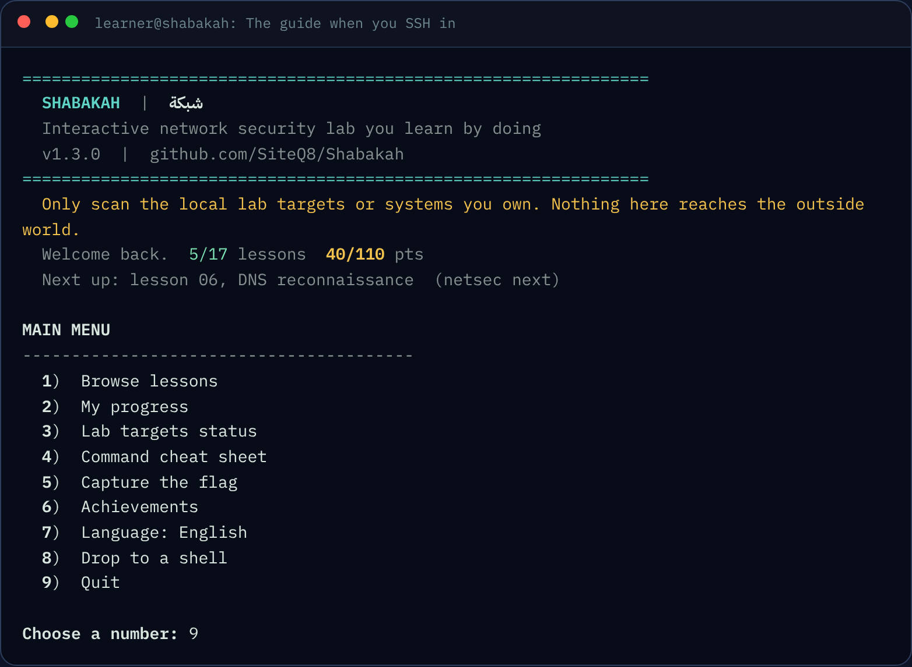

A network security lab you SSH into.
Shabakah runs on your own machine as one isolated Docker image. You start it, you SSH in, and a bilingual guide walks you through 17 hands on lessons against real services running inside it. Every challenge is checked live, so you learn by doing, not by reading.
ssh -p 2222Cleartext web tcp 8080
An HTTP service with a telling banner, hidden paths, and a page it should never expose.
TLS web tcp 8443
The same service over TLS, with a self signed certificate to inspect and reason about.
Enumeration service tcp 9000
A raw TCP service with a chatty banner and an undocumented command to uncover.
Cleartext console tcp 2323
A forgotten admin console that reuses a password, the kind that turns one leak into three.
Lab DNS resolver udp 5353
An offline resolver for the shabakah.lab zone, with A, MX, and TXT records to query.
UDP banner service udp 9001
A UDP service that stays silent until you speak its protocol, which is the point.
Three commands and you are inside.
No lab to wire up, no cloud to pay for, nothing that reaches the outside world.
Run the lab
Pull the image or build it, then bring it up. It runs anywhere Docker runs.
docker compose up -d --build
SSH in
Log in as the learner. The guide greets you and remembers where you left off.
ssh -p 2222 learner@localhost
Learn by doing
Read a lesson, run the tools on the live services, then let the guide check your answer.
netsec check 03 2323,8080,8443,9000
See the guide before you start.
Real screens from the guide, straight out of the terminal.

The guide greets you when you SSH in and remembers your progress.
17 lessons, each with a live challenge.
Every lesson ends with something to prove on the running services, checked by the guide. They run in order, from reading packets to hardening the door you came in through.
6 flags, 110 points.
Each flag sits where a careless operator would leave it, and each is reachable with a tool you already have. Find one, then run netsec submit flag{...}. Lesson 12 walks the whole chain.
| Flag | Where to look | Points |
|---|---|---|
| Recon rookieThe web service has a page it should not. A first curl finds it. | 8080 | 10 |
| Source readerThe home page hides a note in its HTML source, not in the text you see. | 8080 | 10 |
| Left the door openrobots.txt points at paths that were never meant to be public. One holds a config backup. | 8080 | 20 |
| UndocumentedA service answers more commands than it admits to. Enumeration finds the one it hides. | 9000 | 20 |
| One leak, three doorsA cleartext console reuses a password you already saw cross the wire. | 2323 | 30 |
| Hidden in plain sightThe TLS certificate carries a field it never should. Read the whole subject. | 8443 | 20 |
| Total, and the master badge with it | 110 | |
More than a set of notes.
A guide, live services, and a game, in one image so nothing gets in your way.
- A guide that checks your work
- The netsec program is your instructor in the terminal. It shows the objective and the challenge, then verifies your answer against the running services in real time. Right answers stick between sessions.
- Safe by design
- Every practice service listens only inside the lab and runs without privileges. You practise the aggressive tools with no risk to anyone, which is the honest way to learn them.
- Real tools
- nmap, tcpdump, openssl, dig, netcat, hping3 and more are installed. The same tools you use on the job.
- English and Arabic
- Every lesson, prompt, and hint is written in both languages. Switch any time and your progress follows.
- Badges and a certificate
- Seven badges unlock as you clear lessons and capture flags, and a certificate prints once you finish everything.
- The whole surface
- Packet capture, port scanning, service enumeration, HTTP, TLS, DNS, UDP, log reading and SSH hardening. A full first pass over network security.
The tools are already installed.
Nothing to install mid lesson. The lab ships with a working network security kit and the guide to drive it.
Inside the lab
- nmap
- tcpdump
- ngrep
- openssl
- dig
- whois
- netcat
- socat
- curl
- wget
- hping3
- nftables
- iptables
- mtr
- traceroute
Drive it with netsec
netsec | open the interactive guide |
netsec next | jump to your next lesson |
netsec lesson 05 | read one lesson |
netsec check 05 <answer> | check a challenge answer |
netsec ctf | show the flag board |
netsec submit flag{...} | submit a flag you found |
netsec targets | see which services are up |
netsec cert | print your certificate when you finish |
netsec lang ar | switch to Arabic |
Up and running in a minute.
You need Docker. Everything else is in the image.
From source
git clone https://github.com/SiteQ8/Shabakah.git cd Shabakah docker compose up -d --build ssh -p 2222 learner@localhost
Or with the prebuilt image
docker run -d --name shabakah --cap-add NET_ADMIN -p 2222:22 ghcr.io/siteq8/shabakah:latest ssh -p 2222 learner@localhost
The password is set in docker-compose.yml. The default is shabakah.
Good to know.
Is any of this dangerous to run?
No. Every practice service listens only inside the lab and nothing reaches the outside world. You get to run nmap, tcpdump, and hping3 the aggressive way with no risk to anyone.
Do I need to know the command line already?
A little comfort with a terminal helps, but the guide shows the exact commands for each lesson and the cheat sheet is one keypress away.
Does it need an internet connection?
Only to pull or build the image the first time. After that everything runs offline, including the lab DNS resolver.
Can I use it to teach a class or run a workshop?
Yes. It is MIT licensed and bilingual, and each learner runs their own copy, so progress and flags stay per learner.
Where do I report a problem or suggest a lesson?
Open an issue on the GitHub repository. New lessons and services are welcome.